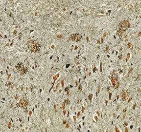

41 Señalización neuronal
860
L
a habilidad de un animal para sobrevivir y mantener la homeostasis depende bastante de cuán efi cazmente detecta y responde a los estímulos : cambios en su entorno. La mayoría de los animales cuentan con un sistema nervioso que toma información, la transmite a la médula espinal y al cerebro, donde es integrada, y luego responde. El sistema nervioso está compuesto principalmente de dos tipos especializados de células: las neuronas y las células gliales (vea la fotografía). La manera exacta en que los animales responden a estímulos depende de cómo están organizadas y conectadas sus neuronas entre sí. Una sola neurona en el cerebro de los vertebrados puede estar conectada funcionalmente con miles de otras neuronas. El sistema nervioso es el sistema regulatorio más importante en los animales. La regulación requiere comunicación, y el sistema nervioso transmite información hacia todas las partes del cuerpo y desde ellas. Como aprenderá el lector, el sistema endocrino trabaja con el sistema nervioso para regular muchos comportamientos y procesos fi siológicos. En general, el sistema endocrino proporciona una regulación relativamente lenta y a largo plazo, mientras el sistema nervioso responde en forma rápida, pero breve. La neurobiología es una de las áreas más emocionantes de la investigación biológica. Algunas áreas activas de investigación incluyen a los neurotransmisores , los mensajeros químicos usados por las neuronas para enviar señales a otras neuronas, y los receptores que se unen con los neurotransmisores. Algunos neurobiólogos están enfocados en cómo funcionan las redes neuronales en el cerebro en la experiencia cognitiva y emocional. Por ejemplo, los investigadores han identifi cado recientemente un área de la corteza prefrontal importante en el autocontrol y en la toma de
Células especializadas en el sistema nervioso. Las neuronas activan las células nerviosas en el sistema nervioso humano.
© Rosedesigns/Shutterstock
CONCEPTOS CLAVE
41.1 La señalización neuronal implica recepción, transmisión, integración y acción por efectores. 41.2 Las neuronas están especializadas para recibir estímulos y transmitir señales; las células gliales sostienen, protegen y alimentan a las neuronas y pueden modifi car las señales neuronales. 41.3 El potencial de reposo de una neurona es mantenido por diferencias en las concentraciones de iones específi cos dentro de la célula con respecto al líquido extracelular y por la permeabilidad selectiva de la membrana plasmática a estos iones. La despolarización de la membrana plasmática neuronal en el nivel de umbral genera un potencial de acción, una señal eléctrica que se desplaza como una onda de despolarización a lo largo del axón. 41.4 La mayoría de las neuronas envían señales a otras células al liberar neurotransmisores en sinapsis químicas. 41.5 Durante la integración, las señales neuronales entrantes se suman; las adiciones temporal y espacial pueden llevar a una neurona al nivel de umbral. 41.6 Las neuronas están organizadas en vías específi cas denominadas circuitos neuronales que, a su vez, están organizados para formar redes neuronales.
Señalización neuronal 861
decisiones. También han identifi cado circuitos neuronales que parecen ser responsables de nuestras experiencias de dolor y placer físicos. Un área de investigación muy activa se enfoca en la neurogénesis, la producción de nuevas neuronas. Uno de los puntos de vista más consagrados por el tiempo sobre la función del sistema nervioso era que el cerebro de los mamíferos no puede generar nuevas neuronas después del nacimiento. El premio Nobel Santiago Ramón y Cajal promovió esta idea a principios del siglo xx y el concepto de que se nace con todas las células cerebrales que se tendrán por siempre fue ampliamente aceptado durante casi un siglo. Otra idea perdurable era que las células gliales, las células más comunes en el cerebro, simplemente proporcionan servicios de soporte para las neuronas. Como se analiza en este capítulo, se ha demostrado que estas dos ideas son incorrectas. Este capítulo se enfoca en la manera en que la información es comunicada por las neuronas y las células gliales. En el capítulo 42 se abordarán los sistemas nerviosos y en el capítulo 43 se explora la recepción sensorial.
41.1 SEÑALIZACIÓN NEURONAL: UNA VISIÓN GENERAL
■ ■ OBJETIVO DE APRENDIZAJE
1 Describir los procesos presentes en la señalización neuronal: recepción, transmisión, integración y acción por los efectores.
Miles de estímulos bombardean de manera constante a un animal. La supervivencia depende de identifi car estos estímulos y responder efi cazmente. La información acerca de cada estímulo debe transmitirse al sistema nervioso y luego es necesario enviarla del sistema nervioso a los músculos (y glándulas). Los animales responden a cambios de temperatura, sonidos, luz, olores y movimientos que pueden indicar la presencia de un depredador o una presa. Señales internas, como hambre, dolor, fl uctuaciones en la presión sanguínea o cambios en la concentración de azúcar en la sangre, también demandan respuestas. En la mayoría de los animales, las respuestas a los estímulos dependen de la señalización neuronal , transferencia de información por medio de redes de células nerviosas, denominadas neuronas . En la mayoría de los animales, la señalización neuronal implica cuatro procesos: recepción, transmisión, integración y acción por los efectores (músculos o glándulas). La recepción , el proceso de detección de un estímulo, es el trabajo de las neuronas y de receptores sensoriales especializados como los que hay en la piel, los ojos y los oídos ( FIGURA
41-1 ). La transmisión es el proceso de enviar mensajes a lo largo de una neurona, de una neurona a otra o de una neurona a un músculo o glándula. En los vertebrados, un mensaje neuronal se transmite de un receptor al sistema nervioso central ( SNC ), que consta del cerebro y la médula espinal. Las neuronas que transmiten información al SNC se denominan neuronas aferentes (que signifi ca “que llevan a”), o neuronas sensoriales . Las neuronas aferentes suelen transmitir información a las interneuronas, o neuronas de asociación, en el SNC. La mayoría de las neu-
ronas, tal vez 99%, son interneuronas. Su función consiste en integrar datos entrantes y salientes. La integración implica ordenar e interpretar información sensorial entrante y determinar la respuesta idónea. Los mensajes neuronales son transmitidos desde el SNC por neuronas eferentes (que signifi ca “que se llevan”) a efectores , músculos y glándulas. Las neuronas eferentes que señalan al músculo esquelético se denominan neuronas motoras . La acción realizada por los efectores
Estímulo externo (p. ej.: vibración, movimiento, luz, olor)
Estímulo interno (p. ej.: cambio en el pH de la sangre o en la presión sanguínea)
RECEPCIÓN
TRANSMISIÓN
Detección por órganos del sentido externos
Detección por órganos del sentido internos
Neuronas sensoriales (aferentes) transmiten información
INTEGRACIÓN
Sistema nervioso central (cerebro y médula espinal)
TRANSMISIÓN
Neuronas motoras (eferentes) transmiten impulsos
ACCIÓN POR EFECTORES (músculos y glándulas)
ej.: el animal huye
ej.: la tasa de respiración aumenta; la presión sanguínea se eleva
Interneuronas ordenan e interpretan información
FIGURA 41-1 Animada Respuesta a un estímulo Sin importar que el estímulo se origine en el mundo exterior o dentro del cuerpo, la información debe ser recibida, transmitida al sistema nervioso central, integrada y luego transmitida a los efectores, que son músculos o glándulas que llevan a cabo alguna acción, la respuesta real.

862 Capítulo 41
de todas las demás células por sus largos procesos (extensiones citoplasmáticas). Analice la estructura de un tipo común de neurona, la neurona multipolar mostrada en la FIGURA 41-2 . La porción más grande de la neurona, el cuerpo de la célula , contiene al núcleo, la mayor parte del citoplasma y casi todos los organelos. Por lo común, dos tipos de procesos se proyectan desde el cuerpo de la célula de una neurona multipolar. Numerosas dendritas se prolongan desde un extremo, y un largo y único axón se prolonga desde el extremo opuesto. Las dendritas son procesos típicamente cortos bastante ramifi cados especializados en recibir estímulos y enviar señales al cuerpo de la célula. El cuerpo de la célula integra las señales de entrada. Aunque su diámetro es microscópico, el axón puede medir 1 m o más de longitud y puede dividirse, formando ramas denominadas colaterales del axón . El axón conduce impulsos nerviosos del cuerpo de la célula a otra neurona o a un músculo o una glándula. El axón se divide en su extremo, formando muchas ramas terminales que acaban en terminales sinápticas . Las terminales sinápticas liberan neurotransmisores , productos químicos que transmiten señales de una neurona a otra o de una neurona a un efector. La unión entre una terminal sináptica y otra neurona (o efector) se denomina sinapis . Por lo regular hay un pequeño espacio entre estas dos células. En los vertebrados, los axones de muchas neuronas fuera del SNC están rodeados por una serie de células de Schwann . Las membranas plasmáticas de estas células gliales contienen mielina , un material blanco y graso. Las células de Schwann envuelven al axón con sus membranas plasmáticas, formando una cubierta aislante denominada vaina de mielina . Los espacios en la vaina de mielina, llamados nodos de Ranvier , existen entre células de Schwann consecutivas. En estos puntos el axón no está aislado con mielina. Los axones de más de 2 μm de diámetro tienen vainas de mielina y se describen como mielinizados . Los axones cuyo diámetro es menor suelen ser amielínicos.
Ciertas regiones del SNC producen nuevas neuronas
Al principio del capítulo se describió la idea de Ramón y Cajal de que la neurogénesis , la producción de nuevas neuronas, no ocurre en el SNC. El cambio de paradigma que ha ocurrido con respecto a este enfoque
es la respuesta real al estímulo. Los receptores sensoriales y las neuronas aferentes y eferentes forman parte del sistema nervioso periférico ( SNP ). En resumen, la información fl uye a través del sistema nervioso en la siguiente secuencia:
recepción por el receptor sensorial ¡ transmisión por la neurona
aferente ¡ integración por interneuronas en el SNC ¡
transmisión por la neurona eferente ¡ acción por los efectores
Repaso
■ Suponga que usted está nadando y de repente detecta una aleta de tiburón que se desplaza hacia usted. ¿Qué procesos deben llevarse a cabo en su sistema nervioso antes que pueda escapar?
■ ¿Qué ocurre después que las señales neuronales se integran en el SNC?
41.2 NEURONAS Y CÉLULAS GLIALES
OBJETIVOS DE APRENDIZAJE
2 Describir la estructura de una neurona típica y mencionar la función de cada una de sus partes. 3 Mencionar los tipos principales de células gliales y describir las funciones de cada una.
Las neuronas y las células gliales son únicas en el sistema nervioso. Las neuronas están especializadas en recibir y enviar información. Las células gliales sostienen y protegen las neuronas y llevan a cabo muchas funciones regulatorias.
Las neuronas reciben estímulos y transmiten señales neuronales
La neurona está altamente especializada en recibir y transmitir información. Las neuronas producen y transmiten señales eléctricas denominadas impulsos nerviosos o potenciales de acción . La neurona se diferencia
Dendritas cubiertas con espinas dendríticas
Cuerpo de la célula
Colateral del axón
Núcleo Axón Nodos de Ranvier Célula de Schwann Ramas terminales
Terminales sinápticas
Citoplasma de la célula de Schwann
Axón
Núcleo
Vaina de mielina
FIGURA 41-2 Animada Estructura de una neurona multipolar El cuerpo de la célula contiene la mayoría de los organelos. Muchas dendritas y un solo axón se extienden desde el cuerpo de la célula. Las células de Schwann forman una vaina de mielina que rodea el axón envolviendo sus propias membranas plasmáticas alrededor de la neurona a la manera de un rollo de jalea.


Señalización neuronal 863
Los axones se agregan para formar nervios y tractos
Un nervio consta de cientos e inclusive miles de axones envueltos entre sí en tejido conectivo ( FIGURA 41-3 ). Es posible comparar un nervio con un cable telefónico. Los axones individuales corresponden a los alambres que corren a lo largo del cable, y las vainas y los revestimientos de tejido conectivo corresponden al aislamiento. Dentro del SNC, los haces de axones se denominan tractos o vías , en lugar de nervios. Fuera del SNC, los cuerpos celulares de las neuronas suelen estar agrupados en masas denominadas ganglios . Dentro del SNC, los grupos de cuerpos celulares suelen denominarse núcleos , en vez de ganglios .
Las células gliales desempeñan un papel crítico en la función neuronal
Las células gliales en conjunto forman la neuroglia (literalmente, “pegamento de los nervios”). Hasta hace poco se consideraba que las células gliales eran pasivas, que simplemente sostenían y protegían a las neuronas. Dotados de tecnología más sofi sticada, los investigadores están descubriendo que las células gliales comunican y realizan funciones regulatorias fundamentales. Más de 75% de las células en el SNC humano son células gliales. Representan alrededor de 50% del volumen del cerebro porque no se ramifi can tanto como las neuronas. En el SNC de los vertebrados se encuentran cuatro tipos de células gliales: astrocitos, oligodendrocitos, células ependimarias y microglia ( TABLA 41-1 ). Los astrocitos son células gliales en forma de estrella que proporcionan sostén físico para las neuronas, así como suministro de nutrientes. Los astrocitos ayudan a regular la composición del líquido extracelular en el SNC al eliminar el exceso de iones potasio. Esta acción ayuda a mantener la excitabilidad normal de la neurona. Algunos astrocitos ubican los extremos de sus largos procesos sobre vasos sanguíneos en el cerebro. En respuesta, las células endoteliales que revisten las células
demuestra el poder y la importancia del avance de la ciencia. La idea de Ramón y Cajal estaba tan arraigada que durante muchos años los investigadores que intentaron estudiar la cuestión fueron desanimados e ignorados. Incluso las imágenes producidas por un microscopio electrónico que mostraban neuronas dividiéndose fueron ridiculizadas y rechazadas. Durante la década de 1980, estudios efectuados sobre el cerebro de monos rhesus parecieron apoyar la idea de Ramón y Cajal. No se encontraron neuronas nuevas en los cerebros de los monos. Parecía que la cuestión estaba resuelta. No obstante, en la ciencia este tipo de cuestiones no se resuelven casi nunca. Los investigadores dedicados al estudio de una variedad de problemas en apariencia no relacionados hicieron observaciones que arrojaron nueva luz al tema de la neurogénesis. Durante más de 25 años, Fernando Nott ebohm en la Universidad Rockefeller ha estudiado el canto de los pájaros, incluyendo su base neuronal. Nott ebohm encontró que los pájaros producen a diario nuevas neuronas en el centro cerebral que regula su canto. Su trabajo fue rechazado al principio como un fenómeno peculiar de los pájaros y no relevante para los mamíferos. No obstante, otros investigadores, más notablemente la fi sióloga Elizabeth Gould en la Universidad de Princeton, han proporcionado datos adicionales que en conjunto han descalifi cado el concepto de Ramón y Cajal. Gould demostró la proliferación de neuronas en primates. Ella y su equipo de investigación también descubrieron que el estrés daña el cerebro e inhibe la mitosis en las neuronas. Estresaron a ratas recién nacidas al separarlas de sus madres durante 3 horas diarias. Estas ratas no aprendieron cómo manejar el estrés y ya adultas tenían menos neuronas en ciertas áreas de sus cerebros que las ratas de control. Las primeras investigaciones pudieron haber fracasado en mostrar nuevas neuronas en el cerebro porque los animales motivo de estudio estaban en una condición de estrés y la neurogénesis estaba inhibida. Los neurobiólogos coinciden ahora en que la neurogénesis ocurre de manera regular en el cerebro de mamíferos adultos, por lo menos en el bulbo olfatorio y el hipocampo. El paradigma ha cambiado.
E. R. Lewis/Biological Photo Service
Vaina de mielina
Cuerpos celulares
Arteria Vena Axón
Ganglio
100 μ m
Micrografía por escaneo de electrones que muestra una sección transversal a través de un nervio aferente mielinizado de una rana toro.
Un nervio consta de haces de axones mantenidos juntos por tejido conectivo. Los cuerpos celulares que pertenecen a los axones de un nervio están agrupados en un ganglio.
FIGURA 41-3 Animada Estructura de un nervio mielinizado
864 Capítulo 41
Funciones de las células gliales
Tipo de célula glial Funciones
Astrocitos Sostienen físicamente a las neuronas
Suministran nutrientes a las neuronas
Eliminan el exceso de K + , lo que ayuda a regular la composición de fl uido extracelular en el SNC
Inducen a los vasos sanguíneos a formar la barrera hematoencefálica
Se comunican entre sí y con las neuronas
Inducen la formación de sinapsis y refuerzan la actividad de las sinapsis
Responden a los neurotransmisores y ayudan a mantener la recaptación de neurotransmisores
Pueden ser importantes en la memoria y el aprendizaje
Guían a las neuronas durante el desarrollo embrionario
Oligodendrocitos Forman vainas de mielina alrededor de las neuronas en el SNC
Células ependimales Revisten cavidades del SNC
Ayudan a producir y circular el líquido cefalorraquídeo
Pueden funcionar como células madre neuronales
Microglia Fagocitosis de bacterias y desechos
Liberación de moléculas de señalización que median en la infl amación
TABLA 41-1
Oligodendrocito
Fibra nerviosa
Vaina de mielina
Cilios
Células ependimales
Capilar
Astrocitos


Señalización neuronal 865
■ ¿Cuál es la diferencia entre una neurona y un nervio?
■ ¿Cuáles son las funciones de los astrocitos? ¿Y de las microglias?
41.3 TRANSMISIÓN DE INFORMACIÓN A LO LARGO DE LA NEURONA
OBJETIVOS DE APRENDIZAJE
4 Explicar cómo la neurona desarrolla y mantiene un potencial de reposo. 5 Comparar un potencial graduado con un potencial de acción y describir la producción y transmisión de cada uno. 6 Contrastar la conducción continua con la conducción saltatoria.
La mayoría de las células animales tienen una diferencia en carga eléctrica a través de la membrana plasmática, la carga eléctrica dentro de la célula es más negativa que la carga eléctrica del líquido extracelular. Se dice que la membrana plasmática está polarizada eléctricamente, lo cual signifi ca que un lado, o polo, tiene una carga diferente al del otro lado. Cuando las cargas eléctricas están separadas de esta manera, existe una diferencia de energía potencial a través de la membrana. La diferencia en carga eléctrica a través de la membrana plasmática origina un gradiente de potencial . El voltaje es la fuerza que hace que las partículas cargadas fl uyan entre dos puntos. El voltaje medido a través de la membrana plasmática se denomina potencial de membrana . Si se permite que las cargas vengan juntas, tienen la capacidad de realizar trabajo. Así, puede pensarse que la célula es una batería biológica. En células excitables, como las neuronas y las células musculares, el potencial de membrana puede cambiar rápidamente. Tales cambios pueden transmitir señales a otras células.
Los canales iónicos y las bombas iónicas mantienen el potencial de reposo de la neurona
El potencial de membrana en una neurona o célula muscular en reposo (no excitada) es su potencial de reposo . El potencial de reposo suele expresarse en unidades denominadas milivoltios (mV). (Un milivoltio es la milésima parte de un voltio.) Así como otras células que pueden producir señales eléctricas, la neurona tiene un potencial de reposo de aproximadamente 70 mV. Por convención, esto se expresa como – 70 mV porque el citosol próximo a la membrana plasmática está cargado negativamente con respecto al líquido extracelular ( FIGURA 41-4a ). Los biólogos pueden medir el potencial a través de la membrana al colocar un electrodo dentro de la célula y un segundo electrodo fuera de ella y conectarlos por medio de un voltímetro u osciloscopio muy sensible. Si los dos electrodos se colocan sobre la superfi cie externa de la neurona, no se registra ninguna diferencia de potencial entre ambos. (Todos los puntos sobre el mismo lado de la membrana tienen la misma carga.) Sin embargo, una vez que uno de los electrodos penetra la célula, el voltaje cambia desde cero hasta aproximadamente – 70 mV. Dos factores principales determinan la magnitud del potencial de membrana: (1) las diferencias en las concentraciones entre iones específi cos dentro de la célula y los que están en el líquido extracelular y (2) la permeabilidad selectiva de la membrana plasmática hacia esos iones. La distribución de iones dentro de las neuronas y en el líquido extracelular que las rodea es similar a la de la mayoría de las demás células en el cuerpo. La concentración del ion potasio (K + ) es alrededor de 10 veces mayor dentro de la célula que en su exterior. En contraste, la concentración del ion sodio (Na + ) es alrededor de 10 veces mayor fuera
sanguíneas forman uniones estrechas (vea el capítulo 5) que impiden que muchas sustancias en la sangre entren en el tejido cerebral. Esta pared protectora es la barrera hematoencefálica . Los neurobiólogos han demostrado que los astrocitos están conectados funcionalmente en todo el cerebro. Estas interesantes células gliales pueden participar en la señalización de información al coordinar la actividad entre las neuronas. Se comunican a través de uniones de brecha o uniones comunicantes y con moléculas de señalización. Aunque los astrocitos pueden generar sólo señales eléctricas débiles, se comunican entre sí y con las neuronas por medio de señales químicas. Parece que los astrocitos responden a neurotransmisores liberados por las neuronas. También ayudan a regular la recaptación del exceso de neurotransmisores de las sinapsis. Los neurobiólogos han demostrado que los neurotransmisores inducen la formación de sinapsis y pueden reforzar la actividad de las sinapsis en el cerebro. Parece que sus acciones son importantes en el aprendizaje y en la memoria. Los astrocitos desempeñan un papel en el desarrollo al guiar a las neuronas hacia ubicaciones idóneas en el cuerpo. Los neurobiólogos han demostrado que ciertos astrocitos funcionan como células madre en el cerebro y en la médula espinal. Estas células pueden originar nuevas neuronas, androcitos adicionales y ciertas células gliales distintas. Si se les lleva fuera de su entorno normal en el cerebro de los ratones adultos, los androcitos pueden originar células de todas las capas germinales (las capas de tejido embrionario: ectodermo, mesodermo y endodermo). Los androcitos humanos podrían ser usados algún día para producir tipos específi cos de células necesarias para tratar varias condiciones médicas. Los oligodendrocitos son células gliales que envuelven a las neuronas en el SNC, formando vainas de mielina aislante a su alrededor. Debido a que la mielina es un excelente aislante eléctrico, su presencia acelera la transmisión de impulsos neurológicos. En la enfermedad neurológica llamada esclerosis múltiple , que afecta aproximadamente a 400,000 personas sólo en Norteamérica, los parches de mielina se deterioran a intervalos irregulares a lo largo de los axones en el SNC y son remplazados por tejido cicatrizante. Este daño interfi ere con la con ducción de impulsos neurológicos, y la víctima sufre pérdida de coordinación, temblor y parálisis parcial o total de partes del cuerpo. No hay que confundir los oligodendrocitos con las células de Schwann. Aunque algunas veces se consideran como células gliales, las células de Schwann están ubicadas fuera del SNC. Las células de Schwann forman vainas de mielina alrededor de axones de muchas neuronas que forman parte del SNC. Las células ependimales son células gliales ciliadas que revisten las cavidades internas del SNC. Las células ependimales ayudan a producir y hacer circular el líquido cefalorraquídeo que irriga al cerebro y la médula espinal de los vertebrados (lo cual se estudia en el capítulo 42). Los investigadores han sugerido recientemente que las células ependimales podrían funcionar como células madre neuronales. Las microglias son en realidad macrófagos especializados (células fagocíticas que ingieren y digieren restos celulares y bacterias). Las microglias responden a señales de las neuronas y son importantes en la mediación de respuestas a daños o enfermedades. Estas células se encuentran cerca de los vasos sanguíneos. Cuando el cerebro está lesionado o infectado, las microglias se multiplican y dirigen a la zona afectada. Ahí eliminan bacterias y restos celulares por fagocitosis. También liberan moléculas de señalización (producidas además por macrófagos y otras células en el sistema inmune) que median la infl amación.
Repaso
■ ¿Cuáles son las funciones de (1) las dendritas, (2) las terminales sinápticas y (3) la vaina de mielina?
866 Capítulo 41
(y en las fi bras musculares óseas) el potencial de reposo de la membrana depende principalmente de la difusión de iones por sus gradientes de concentración (consulte el análisis de la difusión en el capítulo 5).
Los iones cruzan la membrana plasmática por difusión a través de canales iónicos
Recuerde que el movimiento de iones ocurre desde una zona de mayor concentración de ese tipo de ion a una de menor concentración. Las proteínas de la membrana forman canales iónicos que por lo regular sólo permiten el paso de tipos específi cos de iones. Las neuronas tienen tres tipos de canales iónicos: canales iónicos pasivos , canales iónicos activados por voltaje y canales iónicos activados químicamente . Los canales iónicos pasivos permiten el paso de iones específi cos como Na + , K + , Cl – y Ca 2 + ( FIGURA 41-4b ). A diferencia de los canales iónicos activados por voltaje y activados químicamente, los canales iónicos pasivos no están controlados por puertas. Los canales de potasio son el tipo más común de canales iónicos pasivos en la membrana plasmática y las células son más permeables al potasio que a otros iones. De hecho, en la neurona en reposo, la membrana plasmática es hasta 100 veces más permeable al K + que al Na + . Cuando el Na + es bombeado fuera de la neurona, el Na + no puede volver fácilmente hacia la célula. No obstante, el K + bombeado hacia la neurona se difunde fácilmente hacia fuera. Los iones potasio se fi ltran a través de canales iónicos pasivos siguiendo su gradiente de concentración. A medida que los iones K + se difunden hacia fuera de la neurona, incrementan la carga positiva en el líquido extracelular con respecto a la carga dentro de la célula. El cambio resultante en el gradiente eléctrico a través de la membrana afecta el fl ujo de iones. Este gradiente eléctrico obliga a algunos de los iones de potasio con carga positiva a volver hacia la célula. El potencial de membrana en el que el fl ujo (caudal) de K + hacia dentro (debido al gradiente eléctrico) es igual al fl ujo de K + hacia fuera (debido al gradiente de concentración) es el potencial de equilibrio para el K + . El potencial de equilibrio para cualquier ion particular es un estado estacionario en el que los fl ujos opuestos químico y eléctrico son iguales y en el ion no hay movimiento neto. El potencial de equilibrio pa ra el K + en una neurona típica es – 80 mV. El potencial de equilibrio para el Na + es – 40 mV; difi ere del potencial de equilibrio del K + debido a la diferencia en concentración de Na + a través de la membrana (la concentración es alta fuera de la célula y baja dentro de ésta). Debido a que la membrana es mucho más permeable al K + que al Na + , el potencial de reposo de la neurona está más próximo al potencial de equilibrio del potasio que al potencial de equilibrio del sodio (recuerde que el potencial de reposo de la neurona es de alrededor de – 70 mV). El potencial de reposo es establecido principalmente por el fl ujo neto de K + hacia la neurona. Sin embargo, el fl ujo neto de Na + hacia fuera contribuye al potencial de reposo. Debido a que la membrana plasmática es permeable a iones cloruro cargados negativamente, el Cl también contribuye un poco. Estos iones se acumulan en el citosol próximo a la membrana plasmática. Las cargas negativas en moléculas grandes como las proteínas se suman a la carga negativa en el citosol. Estos grandes aniones no pueden cruzar la membrana plasmática.
El bombeo de iones mantiene los gradientes que determinan el potencial de reposo
La membrana plasmática de la neurona cuenta con bombas de sodio-potasio muy efi cientes que transportan activamente Na + fuera de la célula y K + hacia la célula (vea la fi gura 41-4b; vea también la fi gura 5-17). Estas bombas requieren ATP para bombear Na + y K + contra su concentración
de la célula que en el interior. Esta distribución asimétrica de iones a través de la membrana plasmática se lleva a cabo por la acción de canales iónicos selectivos y bombas de iones. En las neuronas de los vertebrados
Na +
Na +
Na +
Na +
Na + 3 Na +
Na +
Na +
Cl – Cl –
Cl –
Cl –
Cl –
Cl –
K +
K + K + K +
K +
K + K + K +
2 K + K +
Líquido extracelular
Citoplasma
Difusión hacia fuera
Difusión hacia dentro
Bomba de Na + /K +
Membrana plasmática
Membrana plasmática
– – – – – –
– – – – – – – – – – – –
–80 Tiempo
–60
–40
–20
0
20
40
–70 mV
Electrodo colocado dentro de la célula Electrodo colocado fuera de la célula
Amplificador
Axón
Permeabilidad de la membrana neuronal. La membrana es menos permeable a Na + que a K + . Canales iónicos pasivos permiten que el K + se difunda junto con su gradiente de concentración. Los iones potasio son los principales responsables del voltaje a través de la membrana. Bombas de sodio-potasio en la membrana plasmática bombean de manera activa Na + fuera de la membrana plasmática y K + hacia dentro. La membrana plasmática es permeable a Cl – cargado negativamente, que contribuye un poco a la carga negativa. Grandes aniones (A – ) como las proteínas también contribuyen a la carga negativa.
Medición del potencial de reposo de una neurona. El axón está cargado negativamente en comparación con el líquido extracelular circundante. La diferencia en carga eléctrica a través de la membrana plasmática se mide al colocar un electrodo dentro de la neurona y un segundo electrodo en el líquido extracelular fuera de la membrana plasmática.
A –
A – A –
FIGURA 41-4 Animada Potencial de reposo
Señalización neuronal 867
nicos dependientes del voltaje ) en la membrana plasmática del axón y el cuerpo de la célula. Los biólogos pueden estudiar estos canales al usar la técnica de parche de sujeción para medir corrientes a través de toda la membrana ( FIGURA 41-5 ). El parche de membrana medido es tan pequeño que puede contener un solo canal. Los biólogos han usado ciertas toxinas que afectan el sistema nervioso para investigar cómo funcionan los canales de la membrana. Por ejemplo, el veneno tetrodotoxina (TT X) se une a los canales de Na + activados por voltaje, bloqueando el paso de Na + . Al usar TT X y otras toxinas, los investigadores pudieron identifi car la proteína del canal. La TT X fue aislada primero del pez globo japonés, que se consume como una delicia ( FIGURA 41-6 ). En pequeñas cantidades, la TT X hormiguea las papilas gustativas, pero en dosis mayores puede impedir la respiración. (¡El gobierno japonés opera un programa de certifi cación para chefs de pez globo!). Los investigadores han establecido que los canales iónicos activados por voltaje han cargado regiones que actúan como puertas. Los canales de Na + activados por voltaje tienen dos puertas: una puerta de activación y una puerta de inactivación ( FIGURA 41-7a ). Los canales de K + activados por voltaje tienen una sola puerta ( FIGURA 41-7b ). Anestésicos locales como la procaína (novocaína) y la lidocaína (xilocaína), así como la cocaína, se unen a canales de Na + activados por voltaje y los bloquean. Los canales no pueden abrirse en respuesta a la despolarización y la neurona no puede transmitir un impulso a través de la región anestesiada. Las señales no llegan al cerebro, de modo que no se experimenta dolor.
Un potencial de acción es generado cuando el voltaje alcanza el nivel de umbral
La membrana de casi todas las neuronas puede despolarizarse en aproximadamente 15 mV; es decir, hasta un potencial de alrededor de – 55 mV, sin iniciar un potencial de acción. No obstante, cuando la despolarización es mayor que – 55 mV, se alcanza el nivel de umbral y se genera un potencial de acción. La membrana de la neurona llega rápido al potencial cero e inclusive llega más allá hasta + 35 mV o más mientras se lleva a cabo una inversión de la polaridad. La fuerte subida y caída del potencial de acción se denomina punta . La FIGURA 41-8a en la página 870 ilustra un potencial de acción registrado al colocar un electrodo dentro de un axón y otro justo fuera. A potenciales de reposo, las puertas de activación de los canales de Na + activados por voltaje están cerradas y el Na + no puede pasar hacia la neurona ( FIGURA 41-8b ; siga los pasos ilustrados en esta fi gura a medida que lee sobre la transmisión de los potenciales de acción, la repolarización y el regreso al estado de reposo). Cuando el voltaje llega al nivel de umbral, las proteínas del canal cambian de forma, abriendo las puertas de activación. Luego, los iones sodio pueden circular a través de los canales de Na + activados por voltaje. Como resultado, el interior de la neurona adquiere carga positiva con respecto al líquido fuera de la membrana plasmática, generando un potencial de acción. Las puertas de inactivación que están abiertas en la neurona en reposo se cierran lentamente en respuesta la despolarización. Los iones sodio pueden pasar a través del canal sólo durante el breve período en que están abiertas tanto las puertas de activación como las puertas de inactivación. La generación de un potencial de acción depende de un sistema de retroalimentación positiva . (Recuerde del capítulo 39 que en un sistema de retroalimentación positiva, un cambio en alguna condición desencadena una respuesta que intensifi ca el cambio). Como acaba de analizarse, cuando una neurona está despolarizada, se abren los canales de Na + activados por voltaje, incrementando la permeabilidad de la membrana al
y gradientes eléctricos. Por cada tres Na + bombeados fuera de la célula, dos K + son bombeados hacia dentro de ella. Así, más iones positivos son bombeados hacia fuera que hacia dentro. Las bombas de sodio-potasio mantienen una mayor concentración de K + dentro de la célula que afuera y una mayor concentración de Na + fuera que dentro. En resumen, el desarrollo del potencial de reposo depende principalmente de la difusión de K + fuera de la célula. No obstante, una vez que la neurona alcanza un estado estacionario, la difusión neta de Na + hacia la célula es mayor que la difusión de K + fuera de ella. Esta situación es compensada por las bombas de sodio-potasio que bombean tres Na + hacia fuera de la célula por cada dos K + bombeados hacia dentro.
Las señales locales graduadas varían en magnitud
Las neuronas son células excitables. Responden a estímulos y pueden convertir estímulos en impulsos nerviosos. Un estímulo eléctrico, químico o mecánico puede modifi car el potencial de reposo al incrementar la permeabilidad de la membrana a los iones sodio. Cuando un estímulo ocasiona que el potencial de membrana se haga menos negativo (más próximo a cero) que el potencial de reposo, esa región de la membrana está despolarizada . Debido a que la despolarización aproxima más una neurona a la transmisión de un impulso neuronal, se describe como excitatoria . Por el contrario, cuando el potencial de membrana se vuelve más negativo que el potencial de reposo, la membrana está hiperpolarizada . La hiperpolarización es inhibitoria ; disminuye la habilidad de la neurona para generar un impulso neuronal. Un estímulo puede cambiar el potencial en una región relativamente pequeña de la membrana plasmática. Este potencial graduado es una respuesta local. Funciona como una señal sólo en una distancia muy corta porque se desvanece muy pocos milímetros después de su punto de origen. Un potencial graduado varía en magnitud; es decir, la carga potencial cambia dependiendo de la intensidad del estímulo aplicado. Mientras más grande sea el estímulo, mayor es el cambio en permeabilidad y mayor es el cambio en el potencial de membrana.
Los axones transmiten señales denominadas potenciales de acción
Cuando un estímulo es sufi cientemente fuerte, ocurre un cambio rápido y grande en el potencial de membrana, despolarizando esta última hasta un punto crítico denominado nivel de umbral . En dicho punto, la neurona dispara un impulso nervioso, o potencial de acción , una señal eléctrica que se desplaza con rapidez por el axón hacia las terminales sinápticas. Todas las células pueden generar potenciales graduados, pero sólo las neuronas, las células musculares y unas cuantas células de los sistemas endocrino e inmune pueden generar potenciales de acción. En una serie de experimentos realizados en la década de 1940, los investigadores ingleses pioneros Alan Hodgkin y Andrew Huxley insertaron electrodos en largos axones encontrados en calamares. Al medir los cambios de voltaje a medida que variaban las concentraciones de iones, estos investigadores demostraron que el paso de iones Na + hacia la neurona y iones K + fuera de la misma resultaba en un potencial de acción. El proceso del Na + apresurándose hacia la célula puede compararse con el pedal del acelerador del potencial de acción, mientras que el proceso del K + saliendo de la célula frena el potencial de acción. En 1963, Hodgkin y Huxley fueron galardonados con el Premio Nobel de Fisiología o Medicina por esta investigación. Ahora se sabe que los cambios de voltaje regulan canales iónicos activados por voltaje específi cos (también denominados canales ió-
868 Capítulo 41
impermeable al Na + . Esta inactivación inicia el proceso de repolarización , durante el cual el potencial de membrana regresa a su nivel de reposo. Los canales de K + activados por voltaje se abren lentamente en respuesta a la despolarización. Cuando el Na + casi ha dejado de correr hacia la neurona, los canales de K + se abren y el K + se fi ltra fuera de la neurona. Esta disminución en el K + intracelular devuelve el interior de la membrana a su estado relativamente negativo, repolarizando la membrana. Los canales de K + activados por voltaje se abren hasta que el potencial de reposo se ha restaurado. A medida que una onda de despolarización se desplaza por la membrana de la neurona, el estado normal de polarización se restablece rápi-
Na + . Los iones de sodio se difunden hacia la célula, moviéndose de una zona de mayor concentración a una de menos concentración. A medida que el Na + fl uye hacia la célula, el citosol se carga positivamente con respecto al líquido extracelular. Esta carga despolariza aún más la neurona, de modo que más canales de Na + activados por voltaje se abren, lo cual incrementa la permeabilidad de la membrana al Na + .
La neurona se repolariza y vuelve a un estado de reposo
Luego de cierto período, las puertas de inactivación cierran los canales de Na + activados por voltaje y la membrana nuevamente se vuelve
MÉTODO DE INVESTIGACIÓN
La técnica de parche de sujeción permite a los investigadores estudiar la acción de un solo canal iónico a lo largo del tiempo, inclusive en células muy pequeñas. Este método de investigación fue desarrollado a mediados de la década de 1970 por Erwin Neher y Bert Sakmann, ambos del Instituto Max Planck en Alemania. Ganaron el Premio Nobel en 1991 por este trabajo.
Célula
Canal iónico Canal iónico
Membrana plasmática
Micropipeta
Micropipeta
La punta de una micropipeta se sella herméticamente a un parche de membrana tan pequeño que por lo general contiene un solo canal iónico. El fl ujo de iones a través del canal se puede medir usando un dispositivo de registro extremadamente sensible. Los biólogos celulares han encontrado que el fl ujo de corriente es intermitente, y corresponde a la apertura y el cierre del canal iónico. La permeabilidad del canal afecta a la magnitud de la corriente.
FIGURA 41-5 La técnica de parche de sujeción
La técnica de parche de sujeción ha sido modifi cada de varias maneras y ha sido aplicada a estudios sobre los papeles de los canales iónicos en una amplia gama de procesos celulares tanto en plantas como en animales. Por ejemplo, hasta hace poco los neurocientífi cos consideraban que la transmisión de potenciales de acción era un proceso bastante inefi ciente. Pensaban que había un alto grado de superposición entre el tiempo en que el Na + llega hasta la célula y el K + sale de la misma. Esto sería un desperdicio de energía porque sería como pisar el acelerador y el freno a la vez. Henrik Alle, un neurocientífi co del Max Planck Institute
for Brain Research en Frankfurt, Alemania, y sus colegas han utilizado recientemente la técnica de parche de sujeción para registrar corrientes en neuronas de las zonas del aprendizaje y la memoria de cerebros de ratas. Encontraron que el fl ujo de Na + y de K + estaba casi por completo separado en el tiempo. El Na + ya casi había terminado de entrar en la neurona antes de que los iones K + empezaran a salir. En contraste con estimaciones previas de 30% de efi ciencia para la transmisión de señales a lo largo de la neurona, las neuronas pueden transmitir potenciales de acción con más de 70% de efi ciencia.
¿Por qué se utiliza?
¿Cómo se hace esto?


Señalización neuronal 869
sive con los límites impuestos por sus períodos refractarios, la mayoría de las neuronas pueden transmitir varios cientos de impulsos por segundo.
En resumen, la acción neuronal procede como sigue:
neurona en estado de reposo ¡ el estímulo ocasiona
despolarización ¡ se alcanza el umbral ¡ el potencial de acción
transmite la señal ¡ repolarización y vuelta al estado de reposo
El potencial de acción es una respuesta total o nula
Ningún estímulo demasiado débil para despolarizar la membrana plasmática hasta el nivel de umbral puede disparar la neurona. Simplemente establece una señal local que se desvanece y extingue a unos cuantos milímetros del punto de estímulo. Sólo un estímulo sufi cientemente intenso para despolarizar la membrana hasta su nivel de umbral crítico resulta en la transmisión de un impulso a lo largo del axón. Un potencial de acción es una respuesta total o nula porque ocurre o no ocurre. No existe variación en la intensidad de un solo impulso. Si la ley total o nula es válida, ¿cómo se pueden explicar las diferencias en los niveles de intensidad de las sensaciones? Después de todo no hay difi cultad en distinguir entre un fuerte dolor de muelas y el de una ligera cortada en el brazo. Es factible explicar esta inconsistencia aparente al comprender que la intensidad de la sensación depende de varios factores, incluyendo el número de neuronas estimuladas y su fr ecuencia de descarga . Por ejemplo, suponga que usted se quema una mano. Si la quemadura es grande, más receptores de dolor son estimulados y más neuronas se despolarizan. Además, cada neurona transmite más potenciales de acción por unidad de tiempo.
damente detrás de ella. Todo el proceso, polarización y despolarización, puede llevarse a cabo en menos de 1 milisegundo. Durante el milisegundo o el instante en que es despolarizada, la membrana del axón está en un período refractario absoluto : no puede transmitir otro potencial de acción sin importar cuán grande sea el estímu lo aplicado porque los canales de Na + activados por voltaje están inactivos. Hasta que sus puertas se restablecen, no pueden volver a abrirse. Una vez que sufi cientes puertas de canales de Na + se han restablecido, la neurona entra en un período refractario relativo que dura unos cuantos milisegundos más. Durante este período, el axón puede transmitir impulsos, pero el umbral es más alto (menos negativo). Inclu-
Jeffrey L. Rotman/Peter Arnold, Inc.
FIGURA 41-6 Pez globo japonés Un veneno, tetradotoxina, aislado de este pez ( Fugu rubripes ) se une a los canales del ion sodio activados por voltaje, permitiendo que los neurobiólogos lo estudien.
Na + Na +
Na + Na +
Na +
Na + Na + Na + K + K +
K +
K +
K + K + K +
K +
Puerta de activación
Puerta de inactivación
–70 mV –55 mV
Líquido extracelular
Citoplasma
Canales de potasio. Los canales de K + activados por voltaje tienen puertas de activación que se abren lentamente en respuesta a la despolarización. Las puertas de activación se cierran después de que se ha restaurado el potencial de reposo. Los canales de potasio no tienen puertas de inactivación.
Canales de sodio. En estado de reposo, los canales de Na + activados por voltaje están cerrados ( izquierda ). Cuando el voltaje alcanza el nivel de umbral, las puertas de activación se abren rápidamente, dejando que el Na + pase hacia la célula ( derecha ). Al cabo de un tiempo, las puertas de inactivación se cierran, bloqueando los canales (no se muestra). Las puertas de inactivación se abren cuando una neurona está en el estado de reposo; se cierran lentamente en respuesta a la despolarización. El canal iónico se abre sólo durante el breve período en que ambas puertas, de activación e inactivación, están abiertas.
FIGURA 41-7 Canales iónicos activados por voltaje
870 Capítulo 41
una reacción en cadena hasta que se alcanza el extremo del axón. Así, un potencial de acción es una onda de despolarización que se desplaza a lo largo del axón. La transmisión de un potencial de acción algunas veces se compara con una llama que se mueve a lo largo de un rastro de pólvora. Una vez que la pólvora se enciende en un extremo del rastro, la llama se mueve de manera continua hacia el otro extremo al quemar las partículas de pólvora que se encuentran delante de ella. Una diferencia asombrosa es que, al cabo de un breve período refractario, la neurona se recupera y es capaz de transmitir otro potencial de acción.
Un potencial de acción se propaga por sí mismo
Una vez iniciado, un potencial de acción continúa a lo largo de la neurona. Durante la despolarización, el área afectada de la membrana es más positiva con respecto a regiones adyacentes donde la membrana sigue en el potencial de reposo. La diferencia en potenciales entre las regiones activas y en reposo de la membrana ocasiona que los iones fl uyan entre ambas (una corriente eléctrica). El fl ujo de Na + hacia la región adyacente induce la apertura de los canales de Na + activados por voltaje en esa zona de la membrana ( FIGURA 41-9 ). El proceso se repite como
Cuando la membrana plasmática se despolariza hasta el nivel de umbral, los canales de Na + activados por voltaje se abren y el Na + entra, provocando mayor despolarización; se genera un potencial de acción.
0 –80
Tiempo (milisegundos) 1 2 3 4 5 6 7
–60
–40
–20
0
20
40
Potencial de membrana (mV)
Nivel de umbral Estado de reposo
Despolarización Repolarización
Punta
Na +
Na +
Na +
Na + Na + Na +
Na +
Na +
Na +
K +
K +
K + K +
K + K +
K +
Líquido extracelular
Citoplasma
Canal de potasio Canal de sodio
Na +
Na + Na +
Na + Na +
Na + Na +
Na +
Na + Na +
Na +
Na + Na + Na +
K +
K +
K + K + K + K +
K +
Na + Na + Na +
Na +
Na +
Na +
Na + Na +
Na + Na + Na +
K +
K +
K +
K + K +
K + K +
K +
K + K + K +
Na +
Na +
Na + Na + Na +
Na + Na +
Na + Na + Na +
K +
K +
K +
K +
K +
K + K +
K +
K + K +
K +
Axon
Na +
- – – – – –
– – – – –
– – – – –
– – – – –
Estado de reposo. Los canales de Na + y K + activados por voltaje se cierran.
Despolarización. En el umbral, Los canales de Na + activados por voltaje se abren, el Na + se dirige hacia la neurona, ocasionando más despolarización. Se genera un potencial de acción.
Repolarización. Los canales de Na + activados por voltaje se vuelven inactivos. Los canales de K + activados por voltaje se abren; el K + se difunde fuera de la célula, restaurando la carga negativa en el interior de la célula.
Vuelta al estado de reposo. Los canales de Na + y K + activados por voltaje se cierran. Las bombas de Na + /K + (no se muestran) mueven Na + hacia fuera de la célula y K + hacia dentro, restaurando la distribución original de iones. (b) La acción de los canales iónicos en la membrana plasmática determina el estado de la neurona.
- Potencial de acción. Cuando el axón se despolariza hasta aproximadamente – 55 mV se genera un potencial de acción. (Los valores numéricos varían para diferentes células nerviosas).
1 2
1
2 3
3
4
4
FIGURA 41-8 Animada Señalización neuronal a lo largo de una neurona
La generación de un potencial de acción depende de la actividad de los canales iónicos en la membrana plasmática.
PUNTO CLAVE
Señalización neuronal 871
grande presenta menos resistencia interna a los iones que fl uyen a lo largo de su longitud. Los calamares y otros invertebrados poseen axones gigantes, que miden hasta 1 mm de diámetro, lo que les permite responder rápidamente cuando huyen de depredadores. En los vertebrados ha evolucionado otra estrategia que acelera la transmisión: las neuronas mielinizadas. La mielina actúa como un aislante eléctrico efectivo alrededor del axón. No obstante, el axón no está mielinizado en los nodos de Ranvier. En éstos, la membrana plasmática del axón establece contacto directo con el líquido extracelular circundante. Los canales de Na + y K + activados por voltaje están concentrados en los nodos. De hecho, en las neuronas mielinizadas, el movimiento de iones a través de la membrana ocurre sólo en los nodos. La actividad iónica en un nodo activo resulta en la difusión de iones a lo largo del axón que despolariza el nodo siguiente. El potencial de acción parece saltar de un nodo de Ranvier al siguiente ( FIGURA 41-10 ). Este tipo de transmisión de impulso se denomina conducción saltatoria (de la palabra latina saltus , que signifi ca “salto”). En las neuronas mielinizadas, la distancia entre nodos de Ranvier consecutivos afecta la velocidad de transmisión. Cuando los nodos están más alejados entre sí, menos del axón debe despolarizarse y el axón conduce más rápido el impulso. Al usar conducción saltatoria, un axón mielinizado puede conducir un impulso hasta 50 veces más rápido que el axón amielínico más rápido. La conducción saltatoria tiene otra ventaja sobre la conducción continua: requiere menos energía. Los iones se mueven a través de la membrana plasmática sólo en los nodos, de modo que menos iones de Na + y K + son desplazados. Como resultado, las bombas de sodio-potasio no gastan tanto ATP para restablecer las condiciones de reposo cada vez que un impulso es conducido.
Repaso
■ ¿Cómo contribuyen los canales iónicos y las bombas de iones de sodiopotasio al potencial de reposo?
■ ¿Qué secuencia de eventos ocurre cuando el nivel de umbral se alcanza en una neurona?
■ ¿Cómo trabajan los canales iónicos activados por voltaje?
■ ¿Cuál es la diferencia entre un potencial de acción y un potencial graduado?
■ ¿Cuáles son los benefi cios de la conducción saltatoria en comparación con la conducción continua?
Varios factores determinan la velocidad de un potencial de acción
En comparación con el fl ujo de electrones en un cableado eléctrico o con la velocidad de la luz, un impulso nervioso se desplaza más lentamente. La mayoría de los axones transmiten impulsos a entre 1 y 10 m por segundo. La incesante y progresiva transmisión de impulsos recién descrita, denominada conducción continua , ocurre en neuronas amielínicas. En estos axones, la velocidad de transmisión es proporcional al diámetro del axón. Los axones con diámetros más grandes transmiten más rápido que los de menor diámetro porque un axón con diámetro
Canal de potasio
Canal de sodio
Na + Na + Na +
Na + Na + Na +
Na +
Na +
Zona de despolarización
Zona de repolarización Zona de despolarización
K + K + K +
K + K + K +
K + K + K +
K + K + K +
Axón
Estímulo
- – – – – + + + + + + + + +
- – – – – + + + + + + + + +
- – – – – – + +
- – – – – – + +
– – – – – – – + – –
– – – – – – – + – –
– – + + + + – – – – – – – – –
– – + + + + – – – – – – – – –
Na + Na + Na +
Na + Na + Na +
– + + + +
– + + + +
K +
K +
K +
K +
Na +
Na +
Na +
Na +
Na +
Na +
Na +
Na +
Na +
Na +
Potencial de acción
Potencial de acción
K +
K +
K +
K +
A medida que el potencial de acción avanza a lo largo del axón, la repolarización ocurre rápidamente detrás.
El potencial de acción se transmite como una onda de despolarización que recorre el axón. En la región de despolarización, el Na + se difunde hacia dentro de la célula. 1
2
FIGURA 41-9 Transmisión de un potencial de acción a lo largo del axón Cuando las dendritas (o cuerpo celular) de una neurona son estimuladas lo sufi ciente para despolarizar la membrana hasta su nivel de umbral, un fuerte impulso de cambio de voltaje recorre el axón. Este impulso es un potencial de acción.
872 Capítulo 41
que termina en una sinapsis específi ca se denomina neurona presináptica , mientras una neurona que empieza en una sinapsis es una neurona postsináptica . Observe que estos términos son con respecto a una sinapsis específi ca. Una neurona que es postsináptica con respecto a una sinapsis puede ser presináptica con respecto a la siguiente sinapsis en la secuencia.
Las señales a través de sinapsis pueden ser eléctricas o químicas
Con base en cómo se comunican las neuronas presinápticas o postsinápticas se han identifi cado dos tipos de sinapsis: sinapsis eléctricas y sinapsis químicas. En las sinapsis eléctricas , las neuronas presinápticas y postsinápticas están muy próximas entre sí (a menos de 2 nm una de otra) y forman uniones de brecha o uniones comunicantes (vea el capítulo 5). Los interiores de las dos células están comunicados físicamente por un canal de proteínas. Las sinapsis eléctricas dejan que los iones pasen de una célula a otra, permitiendo que un impulso sea transmitido directa y rápidamente de una neurona presináptica a una neurona postsináptica. Las respuestas de escape de muchos animales implican sinapsis eléctricas. Por ejemplo, la respuesta de escape de “sacudir la cola” del cangrejo de río implica neuronas gigantes en el cordón nervioso que forman sinapsis eléctricas con grandes neuronas motoras. Las neuronas motoras indican a músculos abdominales que se contraigan. Asimismo, las sinapsis eléctricas son importantes en el sistema nervioso de los mamíferos. Por ejemplo, muchas interneuronas se comunican por medio de sinapsis eléctricas. La mayoría de las sinapsis son sinapsis químicas . Las neuronas presinápticas y postsinápticas están separadas por un espacio, la hendidura sináptica , que mide alrededor de 20 nm de ancho (menos de la millonésima parte de un centímetro). Debido a que la despolarización es una propiedad de la membrana plasmática, cuando un potencial de acción llega al extremo de un axón, no puede saltar la brecha. La señal eléctrica debe convertirse en una señal química. Los neurotransmisores son los mensajeros químicos que conducen la señal neuronal a través de la sinapsis y se unen a canales iónicos activados químicamente en la membrana de la neurona postsináptica. Esta unión provoca que canales iónicos específi cos habilitados se abran (o cierren), resultando en cambios en la permeabilidad de la membrana postsináptica. Cuando una neurona postsináptica llega a su nivel de umbral de despolarización, transmite un potencial de acción.
Las neuronas usan neurotransmisores para enviar señales a otras células
Ahora se sabe o sospecha que muchos compuestos químicos funcionan como neurotransmisores, mensajeros químicos usados por las neuronas para enviar señales a otras neuronas o a células musculares o glandulares. Es posible clasifi car a los neurotransmisores en varios grupos químicos, incluyendo acetilcolina, aminas biogénicas, aminoácidos, neuropéptidos y neurotransmisores gaseosos ( TABLA 41-2 ). La acetilcolina es un neurotransmisor de bajo peso molecular que es liberado de las neuronas motoras y desencadena la contracción muscu lar. La acetilcolina también es liberada por algunas neuronas en el cerebro y en el sistema nervioso autónomo (consulte Preguntas acerca de: La enfermedad de Alzheimer ; también consulte el capítulo 42). Las células que liberan acetilcolina se denominan neuronas colinérgicas . Las neuronas que liberan norepinefrina se denominan neuronas adrenérgicas . La norepinefrina , la epinefrina y el neurotransmisor
41.4 TRANSMISIÓN DE INFORMACIÓN A TRAVÉS DE LAS SINAPSIS
OBJETIVOS DE APRENDIZAJE
7 Describir las acciones de los neurotransmisores identifi cados en el capítulo. 8 Seguir los eventos que se llevan a cabo en la transmisión sináptica y elaborar diagramas que apoyen su descripción. 9 Comparar las señales excitatorias e inhibitorias y sus efectos.
Una sinapsis es una unión entre dos neuronas o entre una neurona y un efector, como entre una neurona y una célula muscular. Una neurona
En la conducción saltatoria, el Na + se difunde rápidamente de un nodo de Ranvier al siguiente en una neurona mielinizada. Parece que el potencial de acción salta de nodo en nodo.
– – – – – – –
++
– + + +
– – – – ––
– – – – – – –
++
– + + +
Zona del potencial de acción Nodos de Ranvier
– ++ –
– – – – – – –
++
– + + +
Axón
Célula de Schwann 1
2
3
4
Conducción saltatoria
Dirección de la despolarización
FIGURA 41-10 Animada Conducción saltatoria Esta secuencia de diagramas (pasos 1 a 4) ilustra la transmisión de un potencial de acción en una neurona mielinizada. Las fl echas en los axones indican difusión del Na + .
PUNTO CLAVE
Señalización neuronal 873
su desequilibrio ha sido vinculado con varios trastornos, incluyendo depresión mayor, trastornos de ansiedad, trastorno por défi cit de atención e hiperactividad (TDAH) y esquizofrenia.
dopamina son catecolaminas . Las catecolaminas y los neurotransmisores serotonina e histamina pertenecen a una clase de compuestos denominados aminas biogénicas , las cuales afectan el estado de ánimo y
Neurotransmisores selectos
Neurotransmisor Estructura Sitio de acción Acción
Acetilcolina
H 2 C CH 2 CH 2 [CH 3 ] 3 C
O
O N +
SNC, articulaciones neuromusculares Efecto excitatorio sobre el músculo esquelético; efecto inhibitorio sobre el músculo cardiaco; excitatorio o inhibitorio en otros sitios; la concentración de acetilcolina en el cerebro disminuye durante el avance de la enfermedad de Alzheimer.
Aminas biogénicas Norepinefrina
CH CH 2 NH 2 HO
HO
OH
SNC, SNP Excitatoria o inhibitoria; la concentración en el cerebro afecta el estado de ánimo, el sueño, el desvelo, la atención
Dopamina
CH 2 CH 2 NH 2 HO
HO SNC Ayuda a mantener el equilibrio entre la excitación e inhibición de las neuronas, es importante en funciones motoras, la concentración en el cerebro afecta el estado de ánimo, también participa en la motivación y la recompensa
Serotonina 5-hidroxitriptamina, 5-HT C CH 2 CH 2 NH 2 HO
CH N H
SNC Efecto excitatorio sobre vías que controlan la acción muscular, efecto inhibitorio sobre vías sensoriales, ayuda a regular la ingesta de alimentos, el sueño, el desvelo; afecta el estado de ánimo
Aminoácidos Glutamato H 2 N CH CH 2 CH 2 COOH
COOH
SNC, articulaciones neuromusculares de invertebrados
Es el neurotransmisor excitatorio más importante en el cerebro de los vertebrados, funciona en el aprendizaje y en la memoria, efecto excitatorio en las articulaciones neuromusculares de invertebrados
Aspartato H 2 N CH CH 2 COOH
COOH
SNC Excitatorio, funciona en el aprendizaje y en la memoria
Glicina H 2 N CH 2 COOH SNC Inhibitorio (principalmente en la médula espinal)
Ácido gamma aminobutírico (GABA)
H 2 N CH 2 CH 2 CH 2 COOH SNC, articulaciones neuromusculares de invertebrados
Es el neurotransmisor inhibitorio más importante en el cerebro de los mamíferos
Neuropéptidos Endorfi nas y encefalinas Y ¬ G ¬ G ¬ F ¬ M* (Metionina encefalina) SNC, SNP Opiáceos endógenos, se unen con receptores opiáceos sobre fi bras aferentes que transmiten señales de dolor, inhiben la liberación de la sustancia P
Sustancia P R ¬ P ¬ K ¬ P ¬ Q ¬ Q ¬ F ¬ F ¬ G ¬ L ¬ M SNC, SNP Activa vías ascendentes que transmiten señales de dolor
Neurotransmisores gaseosos Óxido nítrico NO ¿La mayoría de las neuronas? Mensajero retrógrada; transmite señales de una neurona postsináptica a una neurona presináptica
Monóxido de carbono CO ¿La mayoría de las neuronas? Puede ser un neuromodulador
- Las letras representan aminoácidos; consulte la fi gura 3-17.
TABLA 41-2
874 Capítulo 41
¿Qué es la enfermedad de Alzheimer y qué la origina? La enfermedad de Alzheimer ( EA ) es un trastorno cerebral progresivo y degenerativo en el que la señalización neuronal es interrumpida y las neuronas son dañadas y mueren prematuramente. La EA es la causa principal de demencia senil, pérdida de la memoria, juicio y capacidad de razonar que algunas veces se relaciona con el envejecimiento. La EA puede afectar la capacidad de reconocer a miembros de la familia y llevar a cabo actividades de la vida diaria, como vestirse, bañarse y alimentarse. Más de cinco millones de personas en Estados Unidos padecen la EA, que es una de las 10 primeras causas de fallecimiento. El desarrollo de la EA puede ser un proceso de toda la vida. Un estudio sorprendente demostró que la enfermedad puede predecirse en la escritura de una persona a temprana edad. En los adultos jóvenes cuya escritura tiene menor densidad de ideas hay mayor probabilidad de desarrollar la enfermedad. Un método para detectar el desarrollo de la EA es el uso de escaneos con tomografía por emisión de positrones (PET por sus siglas en inglés) para estudiar la absorción de glucosa en el cerebro. Una baja absorción de gluco sa en ciertas zonas del cerebro sugiere que las neuronas en dichas zonas podrían estar dañadas. Recientemente se han identifi cado nuevos marcadores genéticos para la EA. En la EA, las neuronas están dañadas en ciertas partes del cerebro, incluyendo la corteza cerebral y el hipocampo, zonas que son importantes para pensar y recordar. Las neuronas que secretan el neurotransmisor acetilcolina se ven especialmente afectadas. Los investigadores han demostrado que dos de las anormalidades que se desarrollan en el tejido cerebral a medida que se envejece, placas de amiloides y ovillos neurofi brilares , son especialmente características de la EA. La comprensión de las bases bioquímicas y genéticas tanto de las placas como de los ovillos puede proporcionar pistas para las causas y curas de la EA. Las placas amiloides fueron identifi cadas por primera vez en 1906 en cerebros a los que el médico alemán Alois Alzheimer practicó la autopsia. Estas placas son depósitos extracelulares de un péptido denominado beta-amiloide ( b -amiloide). Las neuronas próximas a estas placas parecen hinchadas y deformes. Las microglias suelen estar presentes, lo que sugiere un intento para eliminar las células dañadas o las placas mismas. Los investigadores han encontrado que la b -amiloide se corta de una proteína precursora llamada b -APP (por sus siglas en inglés), una gran proteína transmembránica codifi cada por un gen en el cromosoma 21. Las moléculas b -amiloides normales tienen
40 aminoácidos. No obstante, alrededor de 10% de los péptidos producidos tienen dos aminoácidos adicionales. Este péptido más grande parece formar las placas. Los investigadores han identifi cado mutaciones en genes específi cos que resultan en la producción de b -amiloide anormal. Se ignora la manera precisa en que esta b -amiloide más larga conduce a la EA. Parece que el péptido anormal interrumpe la regulación de calcio, matando las neuronas en el cerebro. El péptido también podría dañar las mitocondrias, liberando radicales libres dañinos. Parece que la EA empieza con cambios sutiles en la función sináptica en el hipocampo, una región del cerebro importante en la memoria. Un síntoma temprano es la disminución en la capacidad para codifi car nuevos recuerdos. La pérdida de la función sináptica puede ser producida por b -amiloide anormal. Mutaciones en otras dos proteínas, presenilina 1 y presenilina 2, han sido vinculadas con la EA. Estas proteínas también reducen la capacidad de regular la concentración de calcio. (Afectan la liberación de Ca 2 + del retículo endoplasmático). Estudios recientes han vinculado la b -amiloide con la privación del sueño. La privación del sueño a corto plazo (tres semanas) parece incrementar la deposición de placas amiloides en modelos con ratones. Otro grupo de investigadores ha demostrado que la b -amiloide puede destruir ciertos tipos de bacterias y por tanto puede tener una función inmune. Las marañas u ovillos neurofi brilares , que se forman en el citoplasama de la neurona, constituyen otra pieza del rompecabezas de la EA. La proteína tau del citoesqueleto normalmente se asocia con la proteína tubulina, que forma microtúbulos. Mutaciones en el gen tau pueden interferir en la manera en que la proteína tau se une a los microtúbulos, resultando
en microtúbulos anormales que no pueden transportar efi cazmente materiales a través de los axones. Proteínas tau anormales se acumulan en el citoplasma, formando depósitos de fi broides que constituyen los ovillos neurofi brilares (vea la fi gura). Estos ovillos interfi eren en la señalización neuronal. Los mecanismos que producen las placas de beta-amiloide y los ovillos neurofi brilares están relacionados. Mediante el uso de ratones transgénicos, los investigadores han demostrado que depósitos de b -amiloide en el cerebro son responsables de la formación de ovillos neurofi brilares en zonas del cerebro que se sabe son afectadas en la enfermedad de Alzheimer. El fármaco memantina (Namenda), uno de los pocos fármacos aprobados para el tratamiento de la EA, retrasa el deterioro cognitivo pero no impide el daño fi nal que ocurre en el cerebro. La memantina bloquea un tipo de receptores de glutamato (receptores NMDA), lo que parece ayudar a restaurar el balance de calcio. El donepezilo (Aricept) inhibe la acetilcolinesterasa, de modo que no degrada la acetilcolina tan rápido. La acetilcolina es un neurotransmisor en el cerebro importante para la memoria y el pensamiento. Varios otros fármacos diseñados para disminuir el avance de la enfermedad de Alzheimer están en ensayos clínicos. Uno de los desafíos del desarrollo de un fármaco ha sido hacer que el medicamente se reciba a través de la barrera hematoencefálica. Algunos fármacos bloquean la formación de b -amiloide, mientras otros disuelven los depósitos de b -amiloide anormal que ya están presentes. Están investigándose mecanismos inmunes que se dirigen a la b amiloide. También están siendo probados fármacos antiinfl amatorios como estrategias que pueden impedir o reducir al desarrollo de la EA.
Preguntas acerca de
LA ENFERMEDAD DE ALZHEIMER
Placas amiloides
Ovillos neurofibrilares
Thomas Deerinck, NCMIR/Photo Researchers, Inc.
Tejido de la corteza cerebral de un paciente con enfermedad de Alzheimer que muestra las placas amiloides características (zonas cafés redondas) y ovillos neurofi brilares (zonas oscuras en forma de lágrima).

Señalización neuronal 875
el neurotransmisor, el ligando , se une con el receptor, el canal iónico se abre ( FIGURA 41-11c ). (Recuerde que un ligando es una molécula que se une a un sitio específi co en un receptor). El receptor acetilcolina, por ejemplo, es un canal iónico cuyo efecto depende de ligandos que permite el paso de Na + y K + . Algunos neurotransmisores, como la serotonina, operan con un mecanismo diferente. Trabajan indirectamente a través de un segundo mensajero . La unión del neurotransmisor con un receptor activa una proteína G . La proteína G activa entonces una enzima, como adenilil ciclasa, en la membrana postsináptica. La adenilil ciclasa convierte el ATP en AMP cíclico ( AMPc ), que actúa como segundo mensajero (vea los capítulos 6 y 49). El AMP cíclico activa una quinasa que fosforiliza una proteína, la cual cierra luego los canales de K + . Para que una neurona postsináptica se repolarice rápidamente, en la hendidura sináptica debe eliminarse cualquier neurotransmisor en exceso. Algunos neurotransmisores son inactivados por enzimas. Por ejemplo, la acetilcolina es degradada en sus componentes químicos, colina y acetato, por la enzima acetilcolinesterasa. Otros neurotransmisores, como las aminas biogénicas, son transportados activamente de vuelta a las terminales sinápticas, proceso conocido como recaptación . Estos neurotransmisores son reempacados en vesículas y se reciclan. Muchos fármacos inhiben la recaptación de neurotransmisores. Por ejemplo, algunos antidepresivos son inhibidores selectivos de la recaptación de serotonina (ISRS). Los ISRS como fl uoxetina (Prozac) y escitalopram (Lexapro) inhiben de manera selectiva la recaptación de serotonina en el cerebro. Esta acción concentra la serotonina en la hendidura sináptica, elevando el estado de ánimo. Algunos antidepresivos (y la cocaína) también inhiben la recaptación de dopamina.
Los receptores activados pueden enviar señales excitatorias o inhibitorias
Una neurona postsináptica puede tener receptores para varios tipos de neurotransmisores. Algunos de sus receptores pueden ser excitatorios y otros, inhibitorios. Dependiendo del tipo de receptor postsináptico con el que se combina, el mismo neurotransmisor puede tener diferentes efectos. Por ejemplo, la acetilcolina tiene un efecto excitatorio sobre el músculo esquelético y un efecto inhibitorio sobre el músculo cardiaco. Cuando las moléculas neurotransmisoras se unen a receptores, el receptor activado puede abrir o cerrar directa o indirectamente canales iónicos; esta acción cambia la permeabilidad de la membrana postsináptica a ciertos iones. La redistribución resultante de los iones cambia el potencial eléctrico de la membrana, y ésta puede despolarizarse. Por ejemplo, cuando las moléculas neurotransmisoras se combinan con receptores que abren canales de Na + , la afl uencia resultante de Na +
despolariza parcialmente la membrana. Si una despolarización local es sufi cientemente intensa, puede detonar un potencial de acción. Un cambio en el potencial de membrana que acerca más la neurona a su estado de disparo se denomina potencial postsináptico excitatorio ( PPSE ). Suponga que sufi cientes iones de sodio entran para cambiar el potencial de membrana de – 70 mV a – 60 mV. La membrana estaría a sólo – 5 mV del umbral. En estas condiciones, un estímulo adicional relativamente débil, causante de una pequeña afl uencia de Na + , podría ocasionar el disparo de la neurona. Observe que a diferencia de los potenciales de acción, los potenciales postsinápticos son respuestas graduadas .
Varios aminoácidos funcionan como neurotransmisores. El glutamato es el neurotransmisor excitatorio más importante en el cerebro. Un tipo de receptor de glutamato es el objetivo de varias drogas que alteran la mente, incluyendo la fenciclidina (“polvo de ángel”). El aminoácido glicina y un aminoácido modifi cado, el aminoácido gamma-aminobutírico ( GABA por sus siglas en inglés) son neurotransmisores que inhiben las neuronas en la médula espinal y en el cerebro. La glicina es el neurotransmisor inhibidor más importante en la médula espinal. El GABA es el neurotransmisor usado en las sinapsis inhibitorias más rápidas en todo el cerebro. Muchos fármacos que reducen la ansiedad mejoran la acción del GABA al permitir que menores concentraciones de GABA abran los canales de Cl – . Estos fármacos incluyen benzodiacepinas, como el diazepam (Valium), alprazolam (Xanax) y los barbitúricos, como el fenobarbital. Los neuropéptidos , como las endorfi nas y encefalinas, parecen funcionar principalmente como neuromoduladores , moléculas mensajeras que estimulan cambios a largo plazo que mejoran o inhiben la función sináptica. Algunos neurobiólogos los consideran un grupo de neurotransmisores, aunque otros los clasifi can como un grupo por separado. Las endorfi nas , como la beta-endorfi na y las encefalinas son los opioides endógenos propios del cuerpo. Las drogas opiáceas, por ejemplo la morfi na y la codeína, son analgésicos poderosos, fármacos que alivian el dolor sin provocar pérdida de conciencia. Las endorfi nas y las encefalinas se unen a receptores opioides (los mismos receptores a los que se unen las drogas opiáceas) y bloquean señales de dolor. Los opioides modulan el efecto de otros neurotransmisores, incluyendo la sustancia P , que activa vías que transmiten señales de dolor desde ciertas neuronas sensoriales hasta el SNC. (La percepción del dolor se aborda en el capítulo 43). La molécula de señalización óxido nítrico ( NO por sus siglas en inglés) es un gas que actúa como mensajero retrógrado en algunas sinapsis. Transmite información desde la neurona postsináptica hasta la neurona presináptica, la dirección opuesta de transmisión de otros neurotransmisores. El monóxido de carbono también ha sido identifi cado como un neurotransmisor gaseoso que puede funcionar como neuromodulador. Algunos neurobiólogos consideran que el óxido nítrico y el monóxido de carbono son segundos mensajeros, en lugar de neurotransmisores.
Los neurotransmisores se unen con receptores en neuronas postsinápticas
Los neurotransmisores están almacenados en terminales sinápticas dentro de cientos de pequeños sacos cerrados por membranas denominados vesículas sinápticas ( FIGURA 41-11a ). Cada vez que un potencial de acción llega a una terminal sináptica, los canales de Ca 2 + activados por voltaje se abren. Luego, los iones de calcio del líquido extracelular fl uyen hacia la terminal sináptica. El Ca 2 + induce a las vesículas sinápticas para fusionarse con la membrana presináptica y liberar moléculas neurotransmisoras hacia la hendidura sináptica por exocitosis ( FIGURA 41-11b ). Las moléculas neurotransmisoras se difunden a través de la hendidura sináptica y se unen con receptores específi cos sobre las dendritas o cuerpos celulares de neuronas postsinápticas (o sobre las membranas plasmáticas de células efectoras). Muchos receptores de neurotransmisores son canales activados químicamente conocidos como canales iónicos cuyo efecto depende de ligandos. (Vea el capítulo 6). Cuando
876 Capítulo 41
En la mayoría de las sinapsis, el potencial de acción no puede saltar a través de la hendidura sináptica entre las dos neuronas. Este problema es resuelto por señalización química a través de sinapsis.
El neurotransmisor se une con el receptor. El canal cuyo efecto depende de ligandos se abre, resultando en despolarización.
Manera en que se transmite un impulso neuronal a través de una sinapsis.
Hendidura sináptica
Membrana presináptica
Membrana postsináptica
Terminal sináptica Ca 2+
Na +
El potencial de acción llega a las terminales sinápticas al final de la neurona presináptica.
Los canales de calcio se abren en la membrana, permitiendo que el Ca 2+ del líquido extracelular penetre a la terminal sináptica.
El Ca 2+ hace que las vesículas sinápticas se fusionen con la membrana plasmática y liberen el neurotransmisor hacia la hendidura sináptica.
2
2
1
1
3
3
El neurotransmisor se une con receptores sobre la membrana de la neurona postsináptica.
4
4
En respuesta, canales de iones específicos se abren o cierran, resultando en despolarización o hiperpolarización. Cuando la despolarización llega al nivel de umbral, un potencial de acción se genera en la neurona postsináptica.
5
5
Axón de la neurona presináptica
Canal de Ca 2+ dependiente de voltaje
Molécula neurotransmisora
Receptor para neurotransmisor
Canal cuyo efecto depende de ligandos
Terminal sináptica
Vesículas sinápticas
Membrana postsináptica
Neurona postsináptica
Ca 2+
- La micrografía por transmisión de electrones muestra terminales sinápticas llenas de vesículas sinápticas.
Vesículas sinápticas
Membrana plasmática de la neurona postsináptica
Membrana plasmática de la neurona presináptica
0.25 μ m
J. F. Gennaro/Photo Researchers, Inc.
FIGURA 41-11 Animada Señalización neuronal a través de una sinapsis
PUNTO CLAVE

Señalización neuronal 877
ticas son producidos continuamente PPSE y PPSI, y los PPSI cancelan el efecto de algunos PPSE. Es importante recordar que cada PPSE y PPSI no es una respuesta total o nula. Más bien, cada uno es una respuesta graduada que no se desplaza como un potencial de acción sino que puede ser sumada o restada de otros PPSE o PPSI. A medida que la membrana de la neurona postsináptica actualiza de manera continua sus tabulaciones moleculares, la neurona puede ser inhibida o llevada al nivel de umbral. Este mecanismo integra cientos de señales (PPSE o PPSI) antes de que un potencial de acción sea transmitido a lo largo del axón de una neurona postsináptica. Respuestas locales permiten a la neurona y todo el sistema nervioso un intervalo de respuestas mucho más grande del que sería posible si todo PPSE generase un potencial de acción.
Los potenciales postsinápticos se suman en el tiempo y el espacio
Cada PPSE o PPSI es un potencial graduado que varía en magnitud dependiendo de la intensidad del estímulo aplicado. Un PPSE suele ser demasiado débil para activar un potencial de acción por sí mismo. Su efecto está por debajo del nivel de umbral. No obstante, aunque los PPSE debajo del umbral no producen un potencial de acción, sí afectan el potencial de membrana. Los PPSE pueden sumarse en un proceso denominado suma ( FIGURA 41-12 ). Ocurre suma temporal cuando estímulos repetidos provocan que nuevos PPSE se desarrollen antes de que PPSE previos hayan decaído. La suma de varios PPSE puede llevar a la neurona al nivel de disparo crítico.
Algunas combinaciones neurotransmisor-receptor hiperpolarizan la membrana postsináptica. El potencial de membrana se vuelve más negativo. Debido a que una acción así aleja aún más la neurona del nivel de disparo, un cambio de potencial en esta dirección se denomina potencial postsináptico inhibitorio ( PPSI ). Por ejemplo, si el potencial de membrana cambia de – 70 mV a – 80 mV, la membrana está aún más lejos del umbral y se requiere un estímulo más fuerte para disparar la neurona. Así como un PPSE, un PPSI puede ser producido de varias formas. Se sabe que dos tipos de receptores GABA producen PPSI. Cuando el GABA se une a un receptor GABA B , los canales de K + se abren. A medida que el K + se difunde hacia fuera, la neurona se vuelve más negativa, hiperpolarizando la membrana. Los receptores GABA A activados producen PPSI al abrir los canales de Cl – . En este caso, la afl uencia de iones negativos hiperpolariza la membrana. Aunque los mecanismos son diferentes, el efecto inhibitorio del GABA es el mismo en ambos casos. En resumen, la señalización neuronal a través de sinapsis implica la siguiente secuencia de eventos:
el potencial de acción llega a las terminales sinápticas ¡ calcio ¡
los iones entran en la terminal sináptica ¡ las vesículas sinápticas
liberan neurotransmisor hacia la hendidura sináptica ¡ el neuro-
transmisor se difunde a través de la hendidura sináptica ¡ el neu-
rotransmisor se une con los receptores en la membrana de la neurona
postsináptica ¡ los canales de iones se abren o cierran, resultando
en despolarización o hiperpolarización de la membrana postsináptica
Repaso
■ ¿Cuáles son algunas funciones de las aminas biogénicas? ¿Y del GABA?
■ ¿Qué eventos se llevan a cabo en una sinapsis química?
■ ¿Cómo se producen los PPSE? ¿Y los PPSI?
41.5 INTEGRACIÓN NEURONAL
■ ■ OBJETIVO DE APRENDIZAJE
10 Defi nir integración neuronal y describir cómo una neurona postsináptica integra estímulos entrantes y “decide” si disparar o no.
Cada neurona puede hacer sinapsis con cientos de otras neuronas. En efecto, miles de terminales sinápticas de neurona presinápticas pueden cubrir hasta 40% de la superfi cie dendrítica y el cuerpo celular de una neurona postsináptica. La función de las dendritas y del cuerpo celu lar de cada neurona consiste en integrar los mensajes que continuamente los bombardean. La integración neuronal es el proceso de sumar, o integrar, señales entrantes. En las neuronas postsináp-
Tiempo (ms)
Potencial de membrana postsináptica (mV)
- 30
0
− 50
− 70
Potencial de reposo
Nivel de umbral
Subumbral (no hay suma). Cada estímulo está en un nivel por debajo del umbral, de modo que no se genera ningún potencial de acción.
Adición temporal. El segundo PPSE ocurre antes de que el primero se extinga, de modo que los dos PPSE se suman. Se genera un potencial de acción.
Adición espacial. Los PPSE generados por la entrada de dos neuronas presinápticas diferentes se suman.
Adición espacial de PPSE y PPSI. Los PPSE y PPSI también se suman y pueden cancelarse entre sí.
E 1 E 1 E 1 E 1 E 1 E 1 I E 1 + I E 2 E 1 + E 2
FIGURA 41-12 Integración neuronal E 1 y E 2 son estímulos excitatorios. I representa un estímulo inhibitorio.
878 Capítulo 41
41.6 CIRCUITOS NEURONALES: SEÑALIZACIÓN DE INFORMACIÓN COMPLEJA
OBJETIVO DE APRENDIZAJE
11 Distinguir entre convergencia y divergencia, y explicar por qué cada una es importante.
El SNC contiene millones de neuronas, pero no se trata simplemente de una masa enmarañada de células nerviosas. Sus neuronas están organizadas en redes neuronales y dentro de cada red las neuronas están dispuestas en vías específi cas o circuitos neuronales . Aunque cada red presenta algunas características especiales, los circuitos neuronales en todas las redes comparten muchas características organizacionales. Por ejemplo, es probable que la convergencia y la divergencia sean características comunes a todas las redes. En la convergencia una sola neurona es controlada por señales convergentes de dos o más neuronas presinápticas ( FIGURA 41-13a ). Por ejemplo, una interneurona en la médula espinal puede recibir información convergente de neuronas sensoriales que entran en la médula, de neuronas que traen información de varias partes del cerebro y de neuronas que provienen de diferentes niveles de la médula espinal. La información de todas estas fuentes debe integrarse antes de que un potencial de acción sea transmitido y una neurona motora idónea sea estimulada. La convergencia es un mecanismo importante mediante el cual el SNC integra la información que incide sobre él desde varias fuentes. En la divergencia una sola neurona presináptica estimula muchas neuro nas postsinápticas ( FIGURA 41-13b ). Cada neurona presináptica puede ramifi carse y hacer sinapsis con miles de neuronas postsinápticas diferentes. Por ejemplo, una sola neurona que transmite un impulso desde el área motora del cerebro puede hacer sinapsis con cientos de interneuronas en la médula espinal y cada una de éstas a su vez puede divergir, de modo que cientos de fi bras musculares son estimuladas.
Repaso
■ ¿Cuál es la diferencia entre convergencia y divergencia?
La adición espacial también puede llevar a la neurona postsináptica al nivel de umbral. La adición espacial ocurre cuando varias terminales sinápticas muy próximas entre sí liberan neurotransmisores en forma simultánea. La neurona postsináptica es estimulada en varios sitios a la vez. Las neuronas también suman PPSI. A medida que los PPSI se suman entre sí como resultado de adición temporal y espacial, alejan aún más al potencial de membrana del umbral.
¿Dónde se lleva a cabo la integración neuronal?
En el nivel molecular cada neurona ordena los miles de bits de información que la bombardean de manera simultánea. En los vertebrados, más de 90% de las neuronas en el cuerpo están ubicadas en el SNC, de modo que la integración neuronal se lleva a cabo ahí, dentro del cerebro y la médula espinal. Estas neuronas son responsables de tomar la mayoría de las “decisiones”. En el siguiente capítulo se analizarán con mayor detalle el cerebro y la médula espinal.
Repaso
■ ¿Qué es la integración neuronal?
■ ¿Cuál es la diferencia entre adición temporal y adición espacial?
■ En los vertebrados, ¿dónde se lleva a cabo la mayor parte de la integración neuronal?
Divergencia de entrada neuronal. Una sola neurona presináptica lleva a cabo sinapsis con muchas neuronas postsinápticas.
Convergencia de entrada neuronal. Varias neuronas presinápticas llevan a cabo sinapsis con una neurona postsináptica.
FIGURA 41-13 Circuitos neuronales
41.1 (página 861)
1 Describir los procesos presentes en la señalización neuronal: recepción, transmisión, integración y acción por los efectores.
■ La señalización neuronal implica (1) recepción de información por un receptor sensorial, (2) transmisión por una neurona aferente al sistema nervioso central ( SNC ) que consta del cerebro y la médula espinal, (3) integración por interneuronas en el sistema nervioso central, (4) transmisión por una neurona eferente a otras neuronas o a un efector y
- acción por efectores , los músculos y las glándulas. Receptores sensoriales y neuronas fuera del SNC forman el sistema nervioso periférico ( SNP ).
41.2 (página 862)
2 Describir la estructura de una neurona típica y mencionar la función de cada una de sus partes.
■ Las neuronas están especializadas para recibir estímulos y transmitir señales eléctricas y químicas. En una neurona típica, el cuerpo de la célula contiene al núcleo y la mayoría de los orgánulos. Muchas dendritas ramifi -
■ ■ RESUMEN: ENFOQUE EN LOS OBJETIVOS DE APRENDIZAJE
Señalización neuronal 879
brana se vuelve más negativo que el potencial de reposo, la membrana está hiperpolarizada .
■ Un potencial graduado es una respuesta local que varía en magnitud dependiendo de la intensidad del estímulo aplicado. Un potencial graduado se desvanece a unos cuantos milímetros de su punto de origen.
■ Si el voltaje a través de la membrana desciende hasta un nivel de umbral crítico , se abren los canales de iones activados por voltaje , dejando que el Na + fl uya hacia la neurona y se genera un potencial de acción . El potencial de acción es una onda de despolarización que se mueve por el axón.
■ A medida que el potencial de acción se mueve por el axón, detrás de él ocurre repolarización . Durante la despolarización, el axón entra en un período refractario absoluto , un tiempo en el que no puede transmitir otro potencial de acción. Cuando se han restablecido sufi cientes puertas que controlan canales de Na + , la neurona entra en un período refractario relativo , un tiempo en el que el umbral para disparar la neurona es más alto.
Aprenda más sobre los canales de iones y los potenciales de acción haciendo clic en las fi guras en CengageNOW .
■ El potencial de acción se ajusta a una respuesta total o nula; no hay variación en la intensidad de un solo impulso. Ocurre una de dos cosas: el potencial de membrana excede al nivel de umbral, llevando a la transmisión de un potencial de acción o no lo hace. Una vez que ha empezado, un potencial de acción se autopropaga. 6 Contrastar la conducción continua con la conducción saltatoria.
■ La conducción continua , que implica a toda la membrana plasmática del axón, se lleva a cabo en neuronas amielínicas.
■ La conducción saltatoria , que es más rápida que la conducción continua, se lleva a cabo en neuronas mielinizadas. La despolarización parece saltar a lo largo del axón de un nodo de Ranvier al siguiente; éstos son sitios donde el axón no está cubierto por mielina y donde se concentran los canales de Na + .
41.4 (página 872)
7 Describir las acciones de los neurotransmisores identifi cados en el capítulo.
■ La unión entre dos neuronas o entre una neurona y un efector es una sinapsis . Aunque hay sinapsis eléctricas, la mayoría de las sinapsis son químicas. En una transmisión sináptica, una neurona presináptica libera un neurotransmisor , un mensajero químico, de sus vesículas sinápticas .
■ La acetilcolina acciona la contracción del músculo esquelético.
■ Las aminas biogénicas incluyen la norepinefrina , epinefrina , serotonina e histamina . Estos neurotransmisores desempeñan papeles importantes en la regulación del estado de ánimo. La dopamina también es importante en la función motora.
■ Varios aminoácidos funcionan como neurotransmisores, incluido el glutamato , el principal neurotransmisor excitatorio en el cerebro, y el GABA , un neurotransmisor inhibitorio generalizado.
■ Los neuropéptidos, que son opioides, incluyen las endorfi nas (por ejemplo, la beta-endorfi na ) y las encefalinas .
■ El óxido nítrico ( NO ), un neurotransmisor gaseoso, transmite señales desde una neurona postsináptica hasta una neurona presináptica, en dirección opuesta a la de la mayoría de los neurotransmisores. 8 Seguir los eventos que se llevan a cabo en la transmisión sináptica y elaborar diagramas que apoyen su descripción.
■ Los iones calcio inducen la fusión de las vesículas sinápticas con la membrana presináptica y liberen un neurotransmisor hacia la hendidura sináptica . El neurotransmisor se difunde a través de la hendidura sináptica y se combina con receptores específi cos sobre una neurona postsináptica.
■ Muchos receptores de neurotransmisores son proteínas que forman canales iónicos cuyo efecto depende de ligandos . Otros activan una proteína G y trabajan a través de un segundo mensajero como AMPc .
Aprenda más sobre la transmisión sináptica haciendo clic en la fi gura en CengageNOW .
cadas se extienden desde el cuerpo de la célula; están especializadas para recibir estímulos y enviar señales al cuerpo de la célula.
■ Un solo axón largo se extiende desde el cuerpo de la célula y forma ramas denominadas colaterales del axón . El axón transmite señales hacia sus ramas terminales , que acaban en terminales sinápticas . Muchos axones están rodeados por una vaina de mielina aislante. En el SNP, la vaina de mielina está formada por células de Schwann. En el SNC, la vaina está formada por otras células gliales. Los nodos de Ranvier son brechas en la vaina entre células de Schwann consecutivas. Un nervio consta de varios cientos de axones envueltos en tejido conectivo; un ganglio es una masa de cuerpos de células neuronales en el SNP.
Aprenda más sobre la estructura de las neuronas y los nervios haciendo clic en las fi guras en CengageNOW .
3 Mencionar los tipos principales de células gliales y describir las funciones de cada una.
■ Las células gliales sostienen y nutren a las neuronas y son importantes en la comunicación neuronal. Los astrocitos son células gliales que físicamente sostienen a las neuronas. Ayudan a regular la composición del líquido extracelular en el SNC absorbiendo el exceso de iones potasio. Los astrocitos se comunican entre sí y con las neuronas; también inducen y estabilizan las sinapsis.
■ Los oligodendrocitos son células gliales que forman vainas de mielina alrededor de los axones en el SNC; las células de Schwann forman vainas alrededor de los axones en el SNP.
■ Las células ependimarias llenan las cavidades en el SNC y ayudan a producir y hacer circular el líquido cefalorraquídeo. También pueden servir como células madre neuronales.
■ Las microglia son células fagocíticas.
41.3 (página 865)
4 Explicar cómo la neurona desarrolla y mantiene un potencial de reposo.
■ Las neuronas usan señales eléctricas para transmitir información a lo largo de los axones. La membrana plasmática de una neurona en reposo, una que no está transmitiendo un impulso, está polarizada . La superfi cie interior de la membrana plasmática está cargada negativamente con respecto al líquido extracelular fuera de la membrana.
■ El potencial de reposo es la diferencia de potencial de aproximadamente – 70 mV que existe a través de la membrana. La magnitud del potencial de reposo está determinada por (1) diferencias en las concentraciones de iones específi cos (principalmente Na + y K + ) dentro de la célula con respecto al líquido extracelular y (2) permeabilidad selectiva de la membrana plasmática a estos iones.
■ Los iones pasan a través de canales iónicos pasivos específi cos. El K + se fi ltra hacia fuera más fácilmente de lo que el Na + puede fi ltrarse hacia dentro. El potencial de reposo se debe principalmente al fl ujo neto de K + hacia la neurona. El Cl – y grandes aniones dentro de la neurona contribuyen con las cargas negativas.
■ Los gradientes que determinan el potencial de reposo son mantenidos por bombas de sodio-potasio que requieren ATP y que continuamente transportan tres Na + fuera de la neurona por cada dos K + transportados dentro. 5 Comparar un potencial graduado con un potencial de acción y describir la producción y transmisión de cada uno.
■ Si un estímulo provoca que el potencial de membrana se vuelva menos negativo, la membrana se vuelve despolarizada . Si el potencial de mem-


880 Capítulo 41
■ La adición temporal ocurre cuando estímulos repetidos originan el desarrollo de nuevos PEPS antes que PEPS previos hayan decaído. La adición espacial ocurre cuando varias terminales sinápticas muy próximas entre sí liberan neurotransmisores de manera simultánea, estimulando la neurona postsináptica en varios sitios diferentes.
41.6 (página 878)
11 Distinguir entre convergencia y divergencia, y explicar por qué cada una es importante.
■ Los circuitos neuronales complejos son posibles debido a asociaciones como convergencia y divergencia. En la convergencia , una sola neurona es afectada por señales convergentes de dos o más neuronas presinápticas. La convergencia permite que el SNC integre información entrante de varias fuentes. En la divergencia , una sola neurona presináptica estimula a muchas neuronas postsinápticas, permitiendo un efecto generalizado.
9 Comparar las señales excitatorias e inhibitorias y sus efectos.
■ La unión de un neurotransmisor con un receptor puede ocasionar un potencial postsináptico excitatorio (PPSE) o un potencial postsináptico inhibitorio (PPSI) , dependiendo del tipo de receptor. Los PEPS acercan a la neurona a su nivel de disparo. Los PIPS alejan a la neurona de su nivel de disparo.
41.5 (página 877)
10 Defi nir integración neuronal y describir cómo una neurona postsináptica integra estímulos entrantes y “decide” si disparar o no.
■ La integración neuronal es el proceso de sumar , o integrar , señales entrantes.
■ Cada PPSE o PPSI es un potencial graduado que varía en magnitud dependiendo de la intensidad del estímulo aplicado. La adición es el proceso de sumar y restar señales entrantes. Por medio de la suma de varios PEPS, la neurona puede llevarse al nivel de disparo crítico.
La suma de señales neuronales entrantes es parte de la (a) recepción (b) transmisión (c) integración (d) acción por efectores (e) transmisión de neuronas aferentes
Los potenciales de acción son transmitidos a terminales sinápticas por (a) los ganglios (b) el axón (c) las dendritas (d) el cuerpo de la célula (e) los nodos
La vaina de mielina es producida alrededor de los axones en el SNP por (a) los axones (b) los cuerpos de las células neuronales (c) las dendritas (d) las células de Schwann (e) los oligodendrocitos
¿Cuál de los siguientes no contribuye al potencial de reposo de una neurona? (a) las bombas de sodio-potasio (b) los canales de iones (c) las diferencias en la concentración de iones a través de la membrana (d) las diferencias en la permeabilidad a ciertos iones (e) los potenciales graduados
¿Cuál de los siguientes hechos ocurre primero cuando el voltaje llega al nivel de umbral? (a) las puertas de ciertos canales iónicos activados por voltaje se abren (b) los canales de K + se cierran (c) la membrana se hiperpolariza (d) el neurotransmisor es liberado (e) la recaptura del neurotransmisor se lleva a cabo en la sinapsis
La conducción saltatoria (a) requiere más energía que la conducción continua (b) ocurre en neuronas amielínicas (c) ocurre cuando el potencial de acción salta de un nodo de Ranvier al siguiente (d) hace más lenta la transmisión de un impulso (e) depende de la acción del GABA
La acetilcolina es (a) una amina biogénica (b) se recicla (c) es liberada por las neuronas motoras y por algunas neuronas en el cerebro (d) es desactivada por proteínas G (e) se une con receptores opioides
Los receptores para la serotonina y algunos otros neurotransmisores (a) son canales iónicos activados por voltaje (b) permiten la afl uencia de iones cloro, llevando a despolarización de la membrana (c) trabajan a través de un segundo mensajero (d) inhiben la recaptación del neurotransmisor (e) son canales iónicos pasivos
Los PPSI (a) excitan las neuronas presinápticas (b) excitan las neuronas postsinápticas (c) pueden cancelar los efectos de algunos PPSE (d) liberan grandes cantidades de neurotransmisores (e) son liberados por cuerpos de células postsinápticas
Una neurona presináptica en el cerebro transmite información a cientos de otras neuronas. Este es un ejemplo de (a) convergencia (b) divergencia (c) adición temporal (d) adición espacial (e) un potencial graduado
En la adición espacial (a) estímulos repetidos ocasionan el desarrollo de nuevos PPSE antes que PPSE previos decaigan (b) ocurre divergencia en dos o más sinapsis (c) los PPSE y los PPSI se cancelan entre sí en el espacio del axón (d) dos o más PPSE transmiten una señal química sumada (e) varias terminales sinápticas muy próximas entre sí liberan el neurotransmisor simultáneamente
Describa las acciones que se llevan a cabo en cada uno de los pasos numerados. Use la fi gura 41-11c para comprobar sus respuestas.
Hendidura sináptica
Membrana presináptica
Membrana postsináptica
Terminal sináptica Ca 2+
Na +
2
1
3
4
EVALÚE SU COMPRENSIÓN
Señalización neuronal 881
Analice varias formas específi cas en las que el sistema nervioso ayuda a mantener la homeostasis.
Fármacos estimulantes como las anfetaminas incrementan la actividad del sistema nervioso. Describa dos mecanismos que impliquen transmisión sináptica que pudieran explicar la acción de tales fármacos.
Establezca una hipótesis para explicar el hecho de que la acetilcolina tiene un efecto excitatorio sobre el músculo esquelético pero un efecto inhibitorio sobre el músculo cardiaco.
VÍNCULO CON LA EVOLUCIÓN. Desde la perspectiva de la adaptación, conjeture las ventajas de los circuitos neuronales caracterizados por una gran cantidad de convergencia y divergencia.
ANÁLISIS DE DATOS. Establezca si cada uno de lo siguiente sería resultado de un PPSE o un PPSI (explique s u respuesta): (a) Na + entra en una neurona postsináptica; (b) K + se difunde fuera de una neurona postsináptica; (c) Cl – entra en una neurona postsináptica.
CIENCIA, TECNOLOGÍA Y SOCIEDAD. En el mercado hay una pueba para evaluar el riesgo de padecer la enfermedad de Alzheimer. Con base en marcadores de genes que pueden identifi carse en una muestra de saliva, una persona sana puede conocer su riesgo aproximado de contraer la enfermedad de Alzheimer. ¿Considera usted que esta información será de utilidad para las personas? ¿Se preocuparía usted por las consecuencias psicológicas de una persona al saber que presenta un alto riesgo? ¿Quisiera saber cuál es el suyo?
CIENCIA, TECNOLOGÍA Y SOCIEDAD. Los investigadores han modifi cado genéticamente células para producir acetilcolina, dopamina, GABA y otros neurotransmisores. ¿De qué maneras podrían ser útiles estas células en una investigación neurobiológica? ¿Cómo podrían ser útiles en medicina clínica?
Preguntas adicionales están disponibles en CengageNOW en www.cengage.com/login.
PENSAMIENTO CRÍTICO